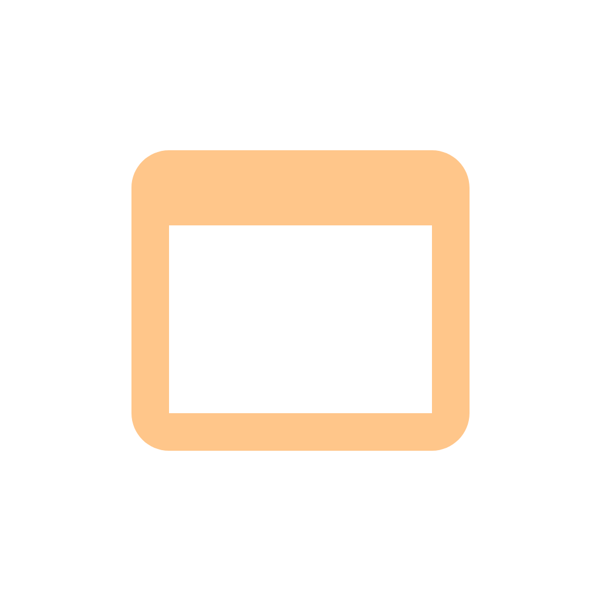

О проекте
DevReader - это небольшой проект, цель которого образовать небольшой ресурс с информацией, которая должна помочь начинающим пронраммистам при освоении какого-либо языка программирования или других вспомогательных компонентов, которые так или иначе связаны с темой программирования.
Идея проекта не заключается в том, чтобы обучить программированию или какому-либо инструменту за короткий срок. DevReader совсем не является точным и практичным учебным пособием по сути. DevReader является просто справочником с необходимой информацией в удобном виде.
Основное преимущество и главная цель проекта - портативность и удобство.
Пользователь, который читает статью в DevReader, видит только текст справочника. Никакой рекламы, никакой ненужной второстепенной информации и никакой "воды" в статьях. Всё просто!
Статья - это каждая отдельная страница по какому-либу языку программирования или инструменту.
Приложения
DevReader доступен с любого устройства, где возможна работа более-менее современного браузера. Скорее всего и вы сейчас читаете это через браузер.
Однако для более удобного чтения у проекта есть приложения ("клиенты"), с помощью которых посещение справочника становится удобнее.
Также через клиент доступны многие другие возможности, недоступные через браузер.
На данный момент доступен только клиент для Android. Десктопный клиент под ОС Microsoft Windows находится пока на проектировании.
Разработка клиента под iOS / iPadOS не планируется из-за отсутствия разработчиков с опытом разработки ПО под данные платформы. Такая же инстория и про macOS.
Test
app-android/ota/beta.json
Version Name:
Version Code:
Update Message:
APK URL:
Changelog URL: